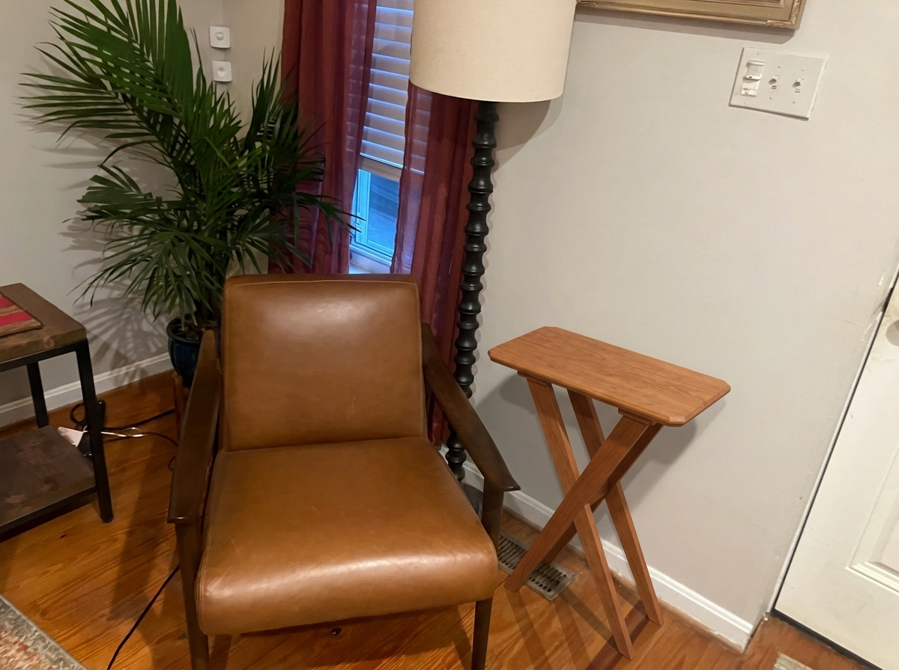
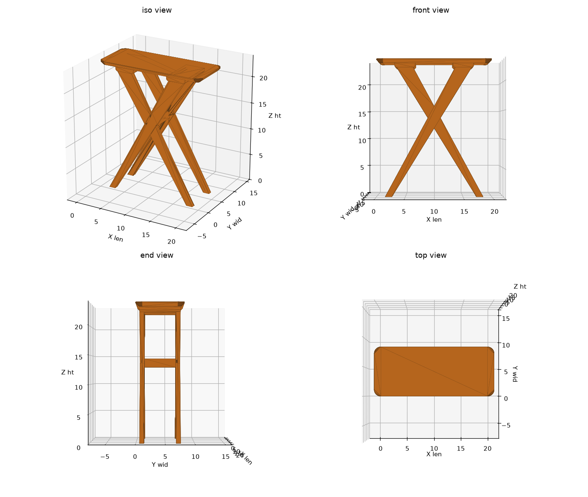
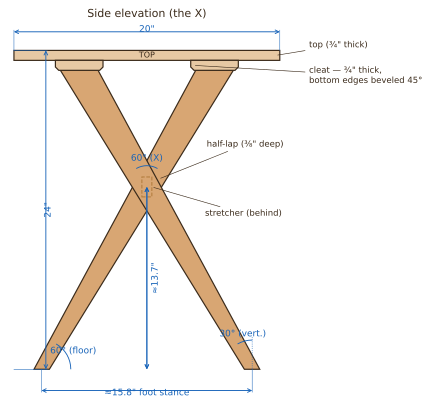
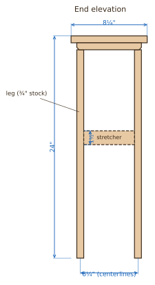
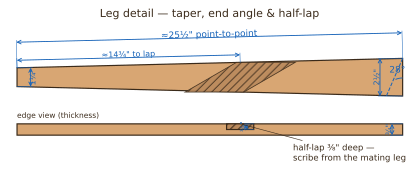
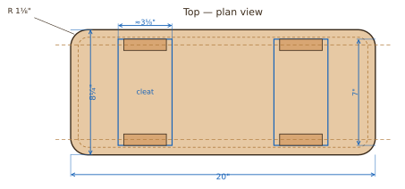

Renderings


Model of record: model/end_table.FCStd (FreeCAD 1.1). All dimensions below
are generated from scripts/build_end_table.py — edit the parameters at the top of that
script and re-run to regenerate the model, mesh, and previews.
Overview & Key Dimensions
| Item | Dimension |
|---|---|
| Overall size | 20" long × 8¼" wide × 24" tall |
| Top | 20" × 8¼" × 3/4" thick |
| Top corners | rounded, 1⅛" radius |
| Top underside edge | 45° chamfer, 9/16" wide → 3/16" edge reveal |
| Top upper edge | 1/32" micro-bevel (crisp edge) |
| Legs | 3/4" stock, tapered 2½" (top) → 1" (foot) |
| Leg angle | ≈ 28° from vertical (61.7° from floor) |
| Half-lap | 3/8" deep (half of stock) at each crossing |
| Stretcher | 3/4" × 1½" × 5½" |
| Cleats (under top) | 2 × ~7" × 3⅝" × 3/4" (long bottom edges beveled 1/4") |
| Overhang | ≈ 4½" at each end, ≈ 1" each side |
| Foot stance | 14" (length) × ≈ 6¼" (width, centerlines) |
Shop Drawings
Dimensioned drawings generated from the model (scripts/draw_diagrams.py).
All angles and sizes come from the same parameters as the 3D model.




Cut List
| Part | Qty | Finished size | Blank / notes |
|---|---|---|---|
| Top | 1 | 20 × 8¼ × 3/4 | Glue up from ~2 boards; trim to size |
| Legs | 4 | ~25½ × 2½→1 × 3/4 | Rip blanks ~27 × 3 × 3/4, then taper |
| Stretcher | 1 | 5½ × 1½ × 3/4 | One small offcut; dowelled into each frame (see below) |
| Top cleats | 2 | ~7 × 3⅝ × 3/4 | Under each end of the top — centered on the leg-tip footprint; long bottom edges beveled 1/4" (ends square); bear the legs & attach the top |
| Dowels | 4 | 3/8" dia × 1¼" | Stretcher-to-frame, 2 per end (~1/2" into the leg, ~3/4" into the stretcher) |
Rough material: about 4–5 board feet of 3/4" cherry, plus a little waste for the taper and glue-up. The top is the only glue-up.
Joinery Details
Half-lap (leg crossing)
- The two legs of each X cross at ≈ 57° (acute angle).
- Crossing center is ≈ 13" up from the floor — about 14¾" from the foot measured along the board.
- Lay the legs crossed, scribe the overlap, set a dado/router to exactly 3/8" (half of 3/4"), and remove the overlap from opposite faces so they interlock flush.
- Glue the lap; clamp flat and check the frame sits without rocking.
Top edges (router)
- Corners: 1⅛" radius — bandsaw/jigsaw close, then template or sand to the line.
- Underside chamfer: 45° bearing-guided chamfer bit, depth set to 9/16", run around the whole perimeter (follows the rounded corners automatically). Leaves a 3/16" edge so the overhang reads thin and floats.
- Top edge: a tiny 1/32" micro-bevel (chamfer bit barely engaged, or a few light block-plane passes) for a crisp upper arris.
- Cherry tears out easily — take light passes and climb-cut the corners.
Stretcher joint (dowels)
- The stretcher butts end-grain against each frame's inner face, so it is glued and dowelled — glue alone on end grain is weak.
- Two 3/8" dowels per end (4 total), stacked ≈ 5/8" apart in the 1½" height and centered in the 3/4" thickness.
- Drill ≈ 1/2" into the leg face and ≈ 3/4" into the stretcher end (dowel ≈ 1¼" long). Don't drill through the 3/4" leg.
- Use a dowel jig (or drill the stretcher ends, add dowel centers, and transfer the marks to the legs). Dry-fit, then glue.
Leg Machining
The legs are the only angled parts. Each leg needs three operations — end angles, the taper, and the half-lap. Make two mirrored pairs (legs that lean left and legs that lean right). Mark a face side and a reference edge on every blank, keep them against the jig/gauge consistently, and test every angle and depth in scrap first — cherry tears out.
Key numbers
- 4 blanks: 3/4" × 3" × ~27" (finished taper 2½"→1", ~25½" point-to-point).
- The top end of each leg stops 3/4" below the tabletop and bears on a cleat (not on the top directly).
- Lean: 28° from vertical (≈ 62° from the floor).
- Crossing angle ≈ 57°; notch centered ~14¾" from the foot (~13" up).
- Half-lap depth: 3/8" (half the stock).
1 · End angles — miter gauge or miter saw
- Both ends of a leg are parallel (the leg is a parallelogram), cut so the foot and top seat flat.
- Set the cut 28° off square (62° off the long edge). Set a sliding bevel to that, mark both ends, and match the gauge/saw to your lines.
- Blade vertical (90°) — no bevel; the leg leans in the plane of its wide face, so the thickness stays square to the cut.
- Tablesaw: add a tall backer fence to the miter gauge and cut a scrap test. To keep the ends parallel, cut one end, flip the board face-over (not end-for-end), and cut the other at the same setting.
- Your miter saw does these just as easily — set it to 28° and lay the leg flat.
- Mirror the angle for the opposite-leaning legs.
2 · Taper 2½" → 1" — tablesaw
- Use a shop-made tapering jig (the blank rides the jig, the jig rides the fence): 2½" at the top end down to 1" at the foot.
- Taper one edge only (keeps a straight reference edge) or both edges for symmetry — your call.
- No jig? Bandsaw just outside a marked line and clean to it with a hand plane.
3 · Half-lap — scribe it, no trig
Because the legs cross at an angle the notch is skewed, so take it from the real parts:
- Cut the end angles and tapers first.
- Lay the two legs in their final crossed position (feet 14" apart, crossing ~13" up) and trace each leg onto the other where they overlap. The two notches go on opposite faces so they interlock flush.
- Set depth to exactly 3/8". Foolproof check: cut test notches in two scraps — nested, they should equal one full 3/4" thickness; adjust until flush.
- Remove the waste between your scribed lines:
- Tablesaw: miter gauge ~33° off square (or aligned to your scribed line), dado/blade raised to 3/8", nibble out in repeated passes; flatten the floor with a chisel or router plane.
- Router: 3/8" straight bit with a depth stop, guided by a straightedge clamped to your lines; square the corners with a chisel.
Dry-fit the lap before glue: leg_a and leg_b must sit flush and coplanar with no rock, and the four tips/feet should land where the plan shows. Then glue the lap and clamp flat.
Assembly Sequence
- Top: glue up the panel, flatten, trim to 20 × 8¼. Round the 4 corners, rout the underside 45° chamfer, then the 1/32" top micro-bevel. Sand to 220.
- Leg blanks: rip four ~3"-wide blanks, mark the taper (2½" at the top to 1" at the foot), and cut/joint the tapers.
- Half-laps: lay out and cut the lap on each leg; dry-assemble the two X-frames and confirm the tips and feet are coplanar (no rock), then glue.
- Stretcher: join the two X-frames with the 3/4" stretcher at the crossing — glue + two 3/8" dowels per end into each frame's inner face (drill ~1/2" into the leg, ~3/4" into the stretcher end; see Joinery Details). This ties the base together at the crossing.
- Cleats: bevel the two long bottom edges (1/4" at 45°, tablesaw or chamfer bit), leaving the ends square where the leg tips bear. Then fasten a cleat under each end of the top — glue and screw it rigidly down onto the two leg tips at that end. This ties the frames together at the top.
- Attach the top with slotted screws up through the cleats (see note below).
- Finish: natural Danish oil or wiped satin poly. Cherry will darken to a warm reddish-brown that complements the chair.
Attaching the top — allow for wood movement. The solid 8¼" top will expand/contract across its width (~1/16" seasonally). Each end of the top carries a cleat (~7 × 3⅝ × 3/4) that the leg tips bear on: screw the cleat rigidly to the leg tips, then attach the top to the cleats with screws in elongated slots running across the grain (center hole snug, outer holes slotted) so the top can float. The cleats also tie the two frames together at the top. Never screw the legs straight up into the top — that can crack the panel.
Design Notes
- No breadboard ends. The top is a single solid panel; at 8¼" wide it is not very cup-prone, and breadboard ends would add an advanced joint and change the clean look. Can be added if desired.
- Stability: a 14" lengthwise foot stance plus a widened ~6¼" across-width stance. The base is tied together at the top (cleats) and bottom (stretcher), so it doesn’t rack or wobble. Tipping check: on the weak axis it would take ≈ 35 lb set right at the edge to tip it — a drink, lamp, or plant is a wide safety margin.
- Tools used: tablesaw, router, miter saw, and hand tools only.